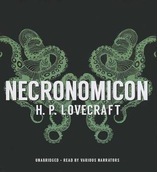

Necronomicon
⭐️
Format: audio (21 hours 1 minute)
Zzzz. I found this all rather uninspiring, and repeatedly found myself looking forward to being done. Lovecraft tried too hard to excite or scare me with what my mind could invent (so much was "too (whatever) to imagine/describe/believe!") - it didn't work for me. He also used too much flowery language in his writing. Lastly, many/most/(all?) of the stories seem to be told from an educational perspective, which grew boring.
Others can comment on Lovecraft as a person, influencer of a genre, and writer of his time - I was completely ignorant about him going into this book. (Spoiler: awful, amazing, meh.)
I've never read anything by him before, but now I know I don't need to revisit his work.
- Previously: Shadows for Silence in the Forests of Hell
- Next: Redshirts